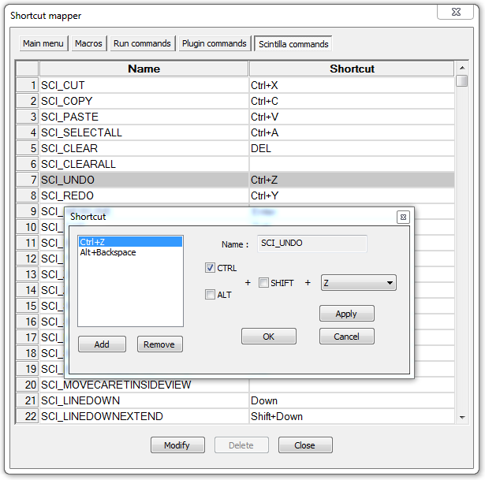

| Précédent: Configurateur de coloration syntaxique | Paramètrages |
Le mappeur de raccourci contrôle les raccourcis clavier assignés aux commandes des menus et l'outil Scintilla. Appuyert sur un tel raccourci va exécuter la commande. Les raccourcis du menu sont uniques, ce qui signifie qu'un élément de menu ne peut avoir qu'un seul raccourci (vous pouvez saisir des doublons, mais un seul est actif, soyez donc prudent avec les conflits). Les raccourcis Scintilla ont un mappage un-vers-plusieurs possible, ce qui signifie une commande Scintilla peut être déclenchée par plusieurs raccourcis.
Les raccourcis sont indiqués dans une liste sur deux colonnes. La colonne de gauche affiche le nom de la commande, la colonne de droite le raccourci associé, le cas échéant. Les raccourcis étant affichés, on peut en modifier un en double-cliquant dessus, ou par clic droit et en sélectionnant . S'affiche alors un dialogue avec le nom (modifiable pour les macros et commandes utilisateur) et le raccourci attribué. Utilisez les cases à cocher pour contrôler ce modificateurs de touches à utiliser (notez que Scintilla ne supporte pas la touche Windows, car elle n'a guère de sens sur une machine Unix / Mac) et les listes déroulantes pour choisir la touche principale. Choisir "Aucun" dans la liste permet de désactiver la touche de raccourci (un avertissement apparaît). Appuyer sur applique les changements, les annule, tout comme la fermeture prématurée du dialogue.

La boîte de dialogue pour les raccourcis Scintilla est un peu différente parce que vous pouvez ajouter des raccourcis multiples. En plus des contrôles normaux, vous trouverez une liste éventuellement vide avec tous les raccourcis attribués. Le bouton va ajouter le raccourci en cours si ce n'est [Aucunn] et s'il n'est pas déjà dans la liste. Le bouton supprime le raccourci sélectionné de la liste (vous pouvez les supprimer tous ainsi, sauf le dernier).Le bouton va remplacer le raccourci sélectionné actuellement par les paramètres actuels. Pour supprimer un raccourci, si plus d'un est présent, utilisez le bouton. Pour supprimer un raccourci s'il est seul, il faut le mettre à "Aucun" et
Le bouton enregistre les ajouts ou modifications - il en faut au moins un. Si le nouveau raccourci n'est pas valide, ce bouton ne sera pas actif, pas plus que .